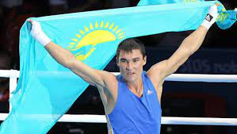

Боксер Геннадий Головкин
Геннадий Головкин – чемпион мира 2008 года и финалист Олимпийских игр 2004 года. Сейчас спортсмен, который родился и вырос в Караганде, все больше времени проводит на профи-ринге. Он участвовал в 43 боях и выиграл 42 из них. Геннадий Головкин, или, как его стало модно называть, GGG – обладатель титулов WBA Super World Champion, IBF World Champion, IBO World Champion и WBC World Champion interim в среднем весе. Геннадий Головкин, периодически приезжает в Караганду, чтобы дать мастер-класс юным спортсменам.


Боксер Серик Сапиев
Серик Сапиев – родился в Карагандинской области. После победы в Лондоне спортсмена окружили вниманием и буквально засыпали подарками. От акима области он получил автомобиль «Toyota Land Cruiser», от президента – квартиру в Астане. Чуть позже его наградили орденом «Отан», ему присвоили звание почетного гражданина Карагандинской области и назвали в его честь Центр бокса. После этого Серик Сапиев ушел из большого спорта. Сейчас он является генеральным директором профессионального боксерского клуба «Астана Арланс» и уделяет время общественной работе.
Первый казахстанский космонавт Тохтар Аубакиров
Тохтар Аубакиров – По образованию он – летчик-испытатель. в 1988 году Тохтару Онгарбаевичу присвоили звание Героя Советского союза и вручили орден Ленина и медаль «Золотая звезда». С 1991 года он стал тренироваться в Центре подготовки космонавтов и спустя несколько месяцев полетел в космос вместе с россиянином и австрийцев. На борту орбитального комплекса «мир» он провел 13 минут. 10 октября 1991 года казахстанский космонавт вернулся на землю на борту космического корабля «Союз ТМ-12».